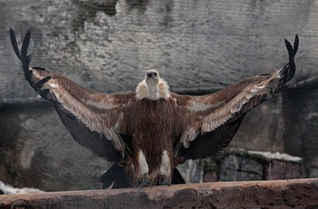
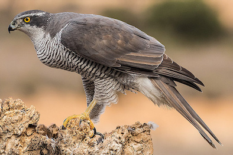

Wow! Based on your answers... You share similarities with Ruppell's Griffon Vulture (Gyps rueppellii) with a little bit of Northern Goshawk (Accipiter gentilis)

Ruppell's Griffon Vulture stands between 33-38 inches tall, placing it at an average height for birds. What makes these birds so athletic is their ability to fly at altitudes up to 36,000 feet in the air. With their outstanding respitory system they are able to counteract the reduced oxygen levels and they use the natural jet streams to soar at these high altitudes allowing them to cover massive distances with little effort. Though, with all these athletic capabilities, these birds are scavengers, looking down on the savanna waiting for scraps to feast on. The Northern Goshawk is also very athletic but instead of flying at high altitudes, the Northen Goshawk can fly at speeds up to 38 miles per hour. Like Ruppell's Griffon Vulture and the Northern Goshawk, you are an average height and athletic but when it comes to group projects or work, you find it easier to follow directions of someone else rather than orcestrating things yourself.
Click on Ceasar to Restart!